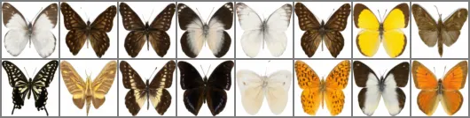

Intro to Diffusion Model — Part 7
In this final post in the series, we are going to train our diffusion model and see the results.
This post is part of a series of posts about diffusion models:
- Intro to Diffusion Model — Part 1
- Intro to Diffusion Model — Part 2
- Intro to Diffusion Model — Part 3
- Intro to Diffusion Model — Part 4
- Intro to Diffusion Model — Part 5
- Intro to Diffusion Model — Part 6
- Intro to Diffusion Model — Part 7 (this post)
- Full implementation
Before we train, we need a dataset. I chose to work here with the Smithsonian butterflies dataset from Hugging Face. First, we need to install the Hugging Face dataset module.
pip install datasets[vision] -qThen, we can load the Smithsonian butterflies dataset.
from datasets import load_dataset
dataset = load_dataset("huggan/smithsonian_butterflies_subset", split='train')Now, we want to create a data loader with this dataset and apply transformation in a similar way to what we did in part 4.
from torchvision.transforms import RandomHorizontalFlip, Compose, ToTensor, Resize, Normalize
from torch.utils.data import DataLoader
image_size = 64
transform = Compose([
Resize((image_size, image_size)),
RandomHorizontalFlip(),
ToTensor(),
Normalize(mean=(0.5, 0.5, 0.5), std=(0.5, 0.5, 0.5))
])
def transforms(data):
images = [transform(im) for im in data['image']]
return {'images': images}
dataset.set_transform(transforms)
batch_size=32
train_dataloader = DataLoader(dataset, batch_size=batch_size, shuffle=True)We can look at an example from the dataset with
batch = next(iter(train_dataloader))
reverse_transform_pil(batch['images'][20])We need to define a loss for the training. Here, we are going to use L1.
import torch.nn.functional as F
def compute_loss(model, x0, t, noise=None):
if noise is None:
noise = torch.randn_like(x0)
x_t = sample_q(x0, t, noise)
predicted_noise = model(x_t, t)
loss = F.l1_loss(noise, predicted_noise)
return lossNow, we can initialize the model and set an optimizer.
from torch.optim import Adam
device = "cuda" if torch.cuda.is_available() else "cpu"
model = DiffusionUnet(dim=image_size, channels=3, dim_mults=(1, 2, 4, 8)).to(device)
optimizer = Adam(model.parameters(), lr=1e-4)We will want to save results along the training, so we create a results folder.
from pathlib import Path
results_folder = Path("./results")
results_folder.mkdir(exist_ok = True)For the training, I’m going to use Google Colab, so I want to save the model to my Google Drive and continue the training later in case of a timeout. For that, we need to connect to Google Drive first.
from google.colab import drive
drive.mount('/content/gdrive')Now, we check if we already have a model saved in our drive. If there is, we load it; otherwise, we create an empty dictionary.
model_saved_file_path = Path('/content/gdrive/MyDrive/diffusion_checkpoints/saved_model.pth')
if model_saved_file_path.exists():
saved_model = torch.load(str(model_saved_file_path))
else:
model_saved_file_path.parent.mkdir(parents=True, exist_ok=True)
saved_model = {}
start_epoch = 0
if saved_model:
print('loading model')
model.load_state_dict(saved_model['model'])
optimizer.load_state_dict(saved_model['optimizer'])
current_epoch = saved_model['epoch']And finally, we implement the training loop.
import numpy as np
from torchvision.utils import save_image
epochs = 1000
loss_steps = 50
sample_every = 1000
loss_for_mean = np.zeros(loss_steps)
prev_time = time.time()
for epoch in range(start_epoch, epochs):
for batch_index, batch in enumerate(train_dataloader):
images = batch['images'].to(device)
# sample t according to Algorithm 1
t = torch.randint(1, num_timesteps, (images.shape[0],), device=device).long()
loss = compute_loss(model, images, t)
current_step = batch_index + epoch * len(train_dataloader)
if current_step % loss_steps == 0:
# Determine approximate time left
batches_done = epoch * len(train_dataloader) + batch_index
batches_left = epochs * len(train_dataloader) - current_step
time_left = datetime.timedelta(seconds=batches_left * (time.time() - prev_time) / loss_steps)
prev_time = time.time()
print(f'Loss at epoch {epoch}, batch {batch_index}: {loss_for_mean.mean()} | time remaining: {time_left}')
loss_for_mean[:] = 0
loss_for_mean[current_step%loss_steps] = loss.item()
optimizer.zero_grad()
loss.backward()
optimizer.step()
if current_step % sample_every == 0:
batch_to_sample = 5
sample_images_list = sampling(model, (batch_to_sample, 3, image_size, image_size))
sample_images = torch.cat(sample_images_list, dim=0)
sample_images = reverse_transform_tensor(sample_images)
save_image(sample_images, str(results_folder / f'sample_{current_step}.png'), nrow=batch_to_sample)
saved_model['epoch'] = epoch + 1
saved_model['model'] = model.state_dict()
saved_model['optimizer']= optimizer.state_dict()
torch.save(saved_model, '/content/gdrive/MyDrive/diffusion_checkpoints/saved_model.pth')We train according to Algorithm 1 from part 3. We get a batch of clean images and sample the timestamp uniformly, and then we try to predict the noise we have added to the images and compute the loss. We save the loss values for loss_steps steps (a step is one batch from the data loader), and after that, we print the mean of the loss over the last loss_steps steps. Pay attention that the loss printed the first time is meaningless since the loss_for_mean buffer is not full yet. We also estimate the time remaining and print it with the loss. We update the weights of the model, and once every sample_every steps we sample from the reverse process and save the result. Finally, at the end of each epoch, we save the states of the model and the optimizer together with the current epoch index.
After finishing the training, we can sample new butterfly images with the following code:
from torchvision.utils import make_grid
reverse_transform_pil(make_grid(sampling(model, (16, 3, 64, 64))[-1], nrow=8))
We can also see the reverse process using
from torchvision.utils import make_grid
image_steps_list = sampling(model, (4, 3, 64, 64), 300)
image_steps = torch.cat(image_steps_list, dim=0)
reverse_transform_pil(make_grid(image_steps, nrow=4))The code above will show the last 300 steps of sampling 4 butterflies.